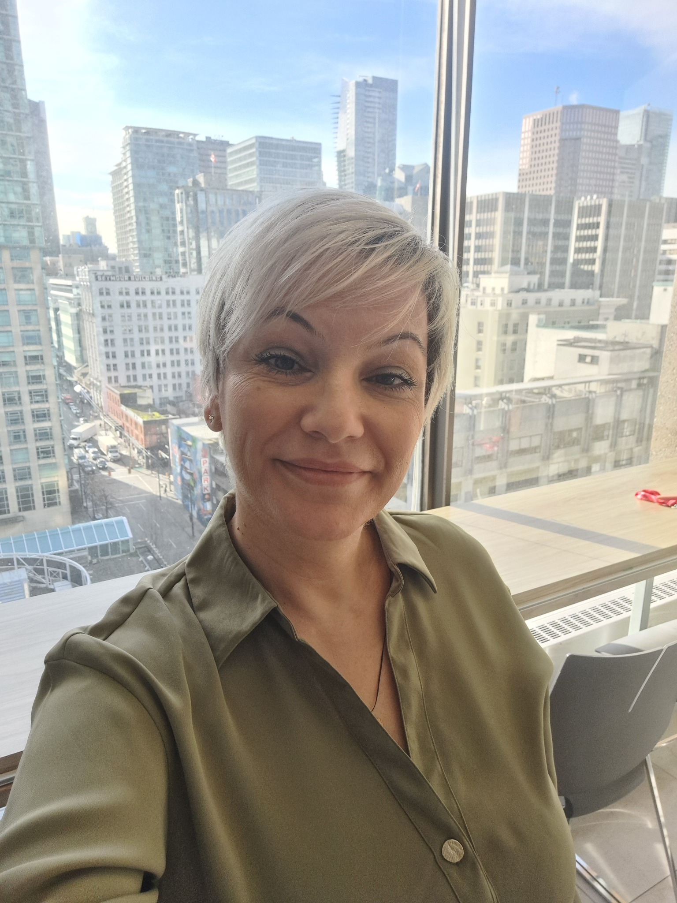

Bring clarity
Make the problem visible, align on outcomes, and create a plan people can act on.
ENGINEERING · PRODUCT · TRANSFORMATION
I’m Ana, an engineering and product leader who brings clarity to complexity, builds strong teams, and helps software organizations regain momentum.
Vancouver, Canada · Open to senior leadership opportunities · Available for advisory and consulting conversations

WHAT I BRING
A clear head for hard problems. An ownership mindset. A practical path from strategy to delivery.
MY APPROACH
I’m at my best when the path isn’t perfectly clear: when a product needs renewed focus, teams need stronger ways of working, or delivery has become harder than it should be.
I bring engineering, product, and business priorities together, then work with people to turn them into real progress. I believe in being honest, taking ownership, and giving teams the support and clarity they need to do good work.
A little more about meMake the problem visible, align on outcomes, and create a plan people can act on.
Give teams context, trust, and accountability—not process for process’s sake.
Improve product quality and delivery while keeping customer and business needs in view.
ADVISORY & CONSULTING
I work with founders and leadership teams on engineering, product, and organizational challenges—alongside my interest in senior leadership roles.
For software organizations working through slow releases, quality problems, technical debt, or unclear priorities—and ready to improve both the product and how it gets built.
Focus: platform quality, test automation, practical AI capabilities, and dependable delivery.
Experienced engineering and product leadership for growing companies, transitions, or teams that need additional senior-level guidance.
Focus: technical and product direction, sound decisions, team support, and execution.
Help with team structures, ownership, collaboration, and moving from outsourced delivery toward stronger internal capabilities.
Focus: clearer responsibilities, ownership, and teams that work well together.
A focused review of delivery, team structure, product priorities, testing and automation practices, and technical risks to identify where improvement will matter most.
Focus: prioritized findings, actionable next steps, and realistic opportunities to modernize.
A strong bias for software quality, useful automation, and applied AI—from automated testing and release practices to LLM-powered security features.
CASE STUDIES
A few examples of the problems I’ve helped solve. Each story is a real situation I’ve worked through: what was getting in the way, what I changed, and what happened next.
Eureka DevSecOps
Restored momentum on an enterprise ASPM platform while rebuilding its technical foundations, release practices, and customer-led roadmap.
At a Vancouver DevSecOps startup, an enterprise Application Security Posture Management (ASPM) platform was facing quality issues, technical debt, shifting priorities, and a three-month period without a release.
Led a blended 15-person engineering organization through a redesign of platform architecture, database, backend, frontend, and UI/UX. Introduced stronger testing and release discipline, gathered feedback from past and prospective users to prioritize the roadmap, and led adoption of LLM-enabled ASVS mapping, vulnerability enrichment, threat modeling, and auto-fix workflows.
Restored at least weekly production releases (from none in three months), achieved 95% test coverage and more than 90% delivery predictability, and strengthened product stability while balancing customer needs against tight startup resources.
The work connected platform modernization, a customer-informed product roadmap, and practical AI-powered security capabilities—while engineering capacity was adjusted week to week around budget and urgent customer issues.
Payage
Built a cross-border in-house technology organization for a 24/7 payment orchestration platform while moving away from outsourced development.
The Malta-based fintech scale-up relied on three external delivery teams of more than 35 professionals to build and operate its white-label payment orchestration platform. It needed internal ownership without disrupting high-volume transaction routing.
As COO, built a 20+ person organization across Engineering, DevOps, Product, Customer Support, and Operations in seven countries. Set up hiring, team structure, delivery practices, vendor transitions, and PCI DSS security processes; supported AWS load balancing, blue/green deployments, and enterprise technical integrations.
Progressively reduced external dependence without interrupting delivery, supported 99.9% uptime during peak traffic, established PCI DSS compliance practices, and technically onboarded three major B2B enterprise customers.
ByteWorx
Modernized financial-market software used by banking and brokerage clients, where reliability and performance mattered at significant scale.
ByteWorx served banks, brokers, and financial-information businesses through trading simulations, portfolio applications, financial portals, and market-data tools. Across its platforms, customers generated nearly 20 million customized charts daily; a core product was constrained by monolithic architecture and production friction.
Led product and engineering across the portfolio with 25+ direct reports. Decomposed a monolithic service into independent microservices, strengthened automated testing and deployments, and aligned priorities with banking and brokerage customers. Established an initial product knowledge base and machine-learning capabilities for trading predictions.
Improved performance 48%, reduced support tickets by approximately 60% and production defects by 80%, while lowering estimated future development effort by roughly 40%. Product ownership expanded to more than 70% of the customer base.
Financial-market products included real-time brokerage competitions and high-volume charting, requiring close coordination between product, engineering, support, and financial-services customers.
Bellatrix & Applify
Advised international clients and delivered 120+ custom software projects, from executive technology decisions to hands-on product delivery.
Clients across North America and Europe needed a trusted partner to translate business goals into workable technology—across advertising, logistics, manufacturing, retail, healthcare, and enterprise software.
Founded and managed Bellatrix, taking engagements from discovery and negotiation to team formation and delivery. Led Applify’s 50-person Macedonian engineering office, managed enterprise work for Gyro’s New York operation, and delivered mobile and workflow solutions for Canadian and US clients.
Delivered more than 120 custom software projects and advised founders and executives on technology strategy, modernization, and operations—building teams around each client’s actual needs.
Microdea: secure iOS approvals and middleware for its Synergize logistics platform. CS Custom Blinds: company-wide web/mobile workflow automation. Precision Plastic Surgery: end-to-end digital platform redesign.
ByteWorx
Rebuilt alignment on a banking proof of concept after roughly two months of delay—then helped earn three more enterprise projects.
A strategic banking proof of concept had lost roughly half its planned schedule without meaningful development progress, leaving the customer and engineering team misaligned over requirements and expectations.
Stepped in outside my assigned portfolio, clarified requirements and acceptance criteria, and brought the customer and engineers into direct, frequent planning and coordination to resolve blockers and restore confidence.
Delivered ahead of the revised schedule, rebuilt customer trust, and helped secure three additional enterprise projects, contributing to seven new hires.
Endava
Restored cooperation across banking-automation teams in two countries while managing high-volume, constantly changing delivery priorities.
Tension between team leads in North Macedonia and Bulgaria was undermining communication, while a banking automation program required coordination across 30–35 concurrent projects and shifting client priorities.
Managed more than 30 professionals across both locations. Met each team lead individually, facilitated direct conversations, and organized a two-day workshop mixing joint planning and technical work with informal team building.
The leads rebuilt a productive working relationship and the two teams shared knowledge more freely. The delivery organization supported 15+ banking process automations weekly while adapting to changing customer needs.
Innovaworks
A 60+ person engineering group was spending too much time in large meetings and coordination. I reorganized delivery around smaller teams with clearer ownership.
As the product and team grew, daily coordination became slow and engineers had less time for focused development.
I created smaller cross-functional mini-teams with members from the US and North Macedonia, gave each team ownership of functional areas, and replaced large daily meetings with focused stand-ups and lightweight lead synchronization.
The new model reduced coordination overhead, improved accountability and cross-office collaboration, and gave the organization a more scalable way to work.
Seavus
A major US customer expected the team to understand its trading business and propose solutions, rather than answer long lists of requirements questions.
The customer's communication style made traditional requirements gathering difficult and created risk around ambiguity and quality.
I helped the team build domain knowledge, prepared proposed workflows and solutions for review, and used customer feedback to refine requirements without relying on lengthy clarification sessions.
The platform was delivered, and the customer asked me to become the single point of contact with Seavus, including for executive-level discussions and strategic planning.
KIND WORDS FROM PEOPLE I’VE WORKED WITH
A few words from colleagues and leaders who have seen how I work. Read the original recommendations on LinkedIn.
Ana was the software engineering director at Eureka, and the simplest thing I can say about her is that the product is materially better than it was before she took it on. I sat on the sales side, so I saw her work from the outside in. What I could count on was this: if Ana told me something would be ready, it was ready. I never had to chase her for a status, and I never had to walk back a commitment to a customer because engineering had slipped. That sounds like a low bar until you have worked somewhere it is not met. She also took ownership well past her job description. When something was broken or unclear she picked it up rather than routing it elsewhere. She moved Eureka from something that worked to something we were confident putting in front of customers. If you are looking for a leader you can hand something to and then stop worrying about it, that is Ana.
I had the pleasure of working closely with Ana at Eureka DevSecOps, where she reported directly to me, and I can recommend her without hesitation. Ana combines exceptional attention to detail with strong project management and planning skills, and has a remarkable ability to keep complex work organized and moving forward. I could trust her to take ownership, think through the details, anticipate what needed to happen next, and follow through. Just as importantly, Ana brings a level of thoughtfulness and decency to the way she works with people that really stands out. She is dependable, considerate, professional, and someone colleagues genuinely enjoy working with. Ana was invaluable to Eureka and contributed far beyond the boundaries of any individual role or project. She will be genuinely missed. I would hire Ana again without hesitation. Any team would be fortunate to have her, and I hope I have the opportunity to work with her again.
We hired Ana at Eureka DevSecOps to lead the engineering organization behind our application security posture management platform. She inherited a young engineering function and made it a real one. She assessed our delivery processes and improved them, and introduced engineering governance and quality standards that changed how the team planned and built. She ran the engineering side of a full platform redesign, managing scope, sequencing, and risk against a moving roadmap, while leading a mixed team of employees and contractors through frequent change. She did all of that inside real constraints. Ana worked with the resources she was given, in a startup where the product and the priorities moved often, and she did it without churn or escalation. She is also a pleasure to work with. She brings real energy into a room, she says the uncomfortable thing when something is not working, and people want to be on her team. Ana can build an engineering function rather than just operate one. I would work with her again without hesitation.
I worked alongside Ana for about a year while she was working as the Software Engineering Manager at Eureka. During her time, she advocated consistently for better software development processes that noticeably drove quality. Last I checked, the team had 1) a weekly cadence of delivering new functionality to production, 2) test coverage was near 100%, and 3) product stability was rock solid. While these are great outcomes for a Software Engineering Manager, the thing that really made an impression on me is Ana's communication skills. Ana has always greeted her team with a smile. There have been tough times, and Ana has demonstrated the courage and strength to handle tough conversations, but she always counterweights this hardness with compassion and kindness. It's for this reason that I would genuinely love to work with Ana again.
I found Ana to be a strong and dynamic project manager responsible for managing issues and continuity of both Production Support issues as well as on-going long term project deliverables spanning multiple engineering teams. She is able to effectively communicate risks, issues and challenges and often presents potential mitigations or solutions through her own initiative. Ana was a great asset to our off-shore team and I would happily work with her again in the future.
Having worked with Ana across multiple projects and organizations, including ByteWorx GmbH and Bellatrix, I’ve had the opportunity to experience her executive leadership and vision firsthand. What stands out most about Ana as a leader is her natural ability to combine strong strategic vision with genuine empathy and trust. Across different team setups and complex tech stacks, she brings remarkable clarity, streamlines delivery, and builds a collaborative culture where engineering excellence thrives. Ana doesn't just manage tech platforms—she elevates the teams around her, inspiring confidence and mentoring people to reach their full potential. Having seen her impact across various projects, I can confidently say Ana is an exceptional technology leader who bridges strategy with execution. She would be an invaluable asset to any executive leadership team.
ABOUT ANA
My career has moved from software engineering into team leadership, project and product management, and senior technology leadership.
That range helps me connect the details of how software gets built with the broader questions that determine whether it succeeds: what customers need, where teams are getting stuck, which trade-offs matter, and how to create an environment where people can deliver well.
I’ve worked across cybersecurity, fintech, payments, banking, trading platforms, and enterprise software. I’m especially drawn to complex situations that need clear thinking, practical leadership, and renewed momentum.
START A CONVERSATION
I’m interested in senior engineering and product leadership opportunities where I can help teams build better products, improve delivery, and make meaningful progress.
If that sounds like what your organization needs, I’d be glad to connect.
Connect on LinkedInAlso open to a conversation about product and engineering transformation.
Tell me what your team is working through and what kind of support would help.
Email me about consulting ↗I'm also interested in permanent engineering and product leadership opportunities.
Email me about a role ↗